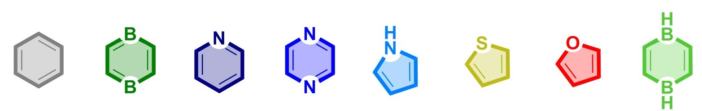

Computational Physical Organic Chemistry · Technion — Israel Institute of Technology
30 September 2020 — Completely redesigned version of Predi-XY is here!
To read about Predi-XY and how it works, you can access the version of record in Electronic Structure or see the preprint on ChemRxiv. To download or clone the program, please visit our GitLab repository or use pip (pip install predixy).
To Predi-XY Paper To Predi-XY Code To Predi-XY Preprint
Predi-XY is a homemade utility written in Python 3 for generating predicted NICS-XY-Scans of cata-condensed polycyclic aromatic systems, using a novel additivity scheme, which was described and expanded on in:
Using its onboard library and the principles of additivity, Predi-XY generates NICS-XY-Scans for unbranched cata-condensed molecules composed of the building blocks below within seconds (or less), without the need for a quantum-mechanical calculation.

Main features of Predi-XY:
.arm files for Aroma inputIf you use Predi-XY, please cite the following: